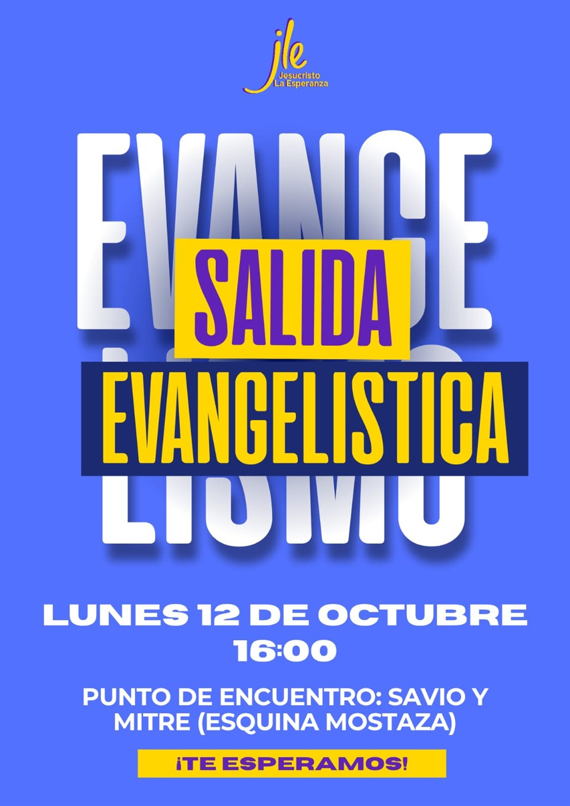
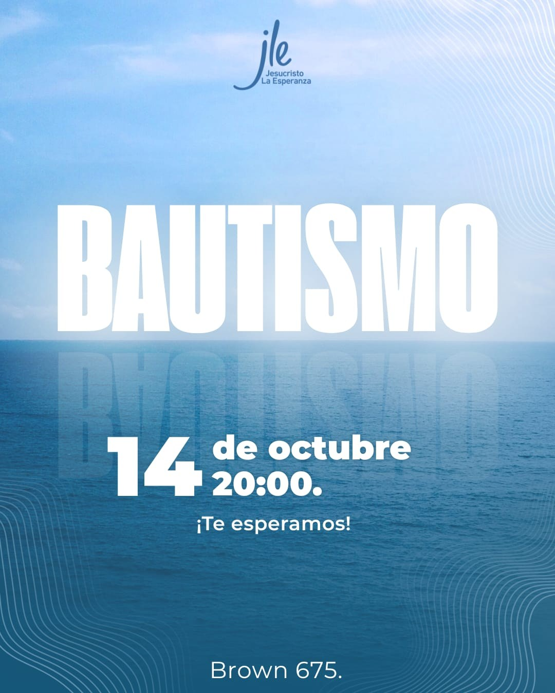
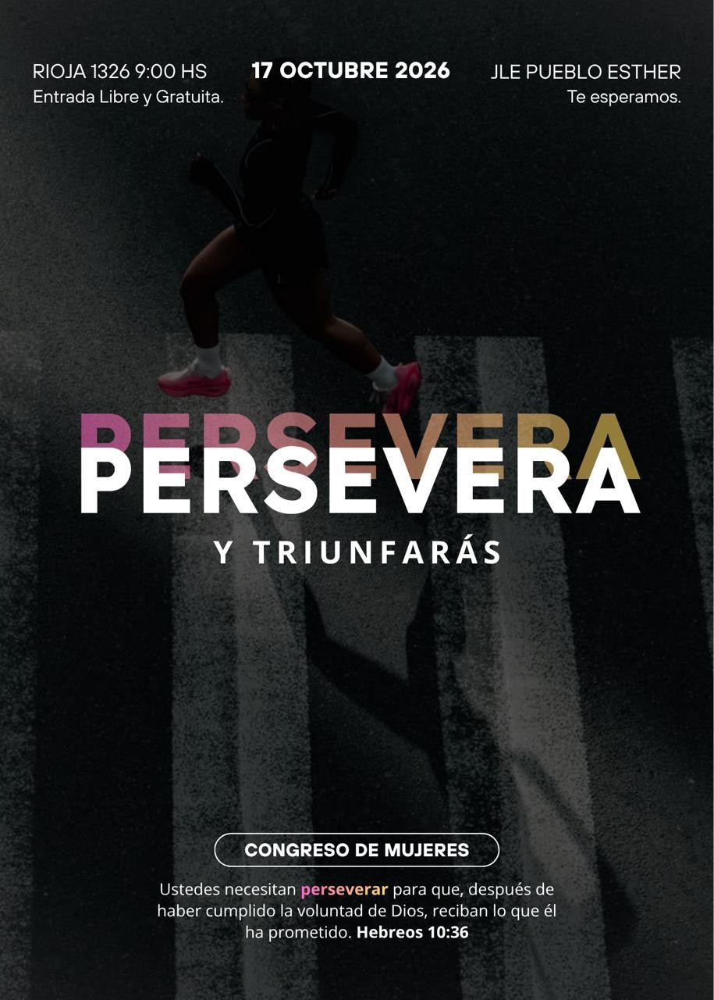
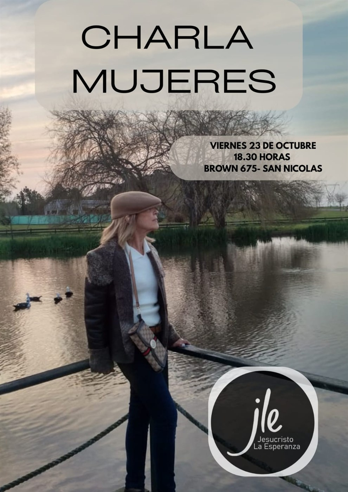
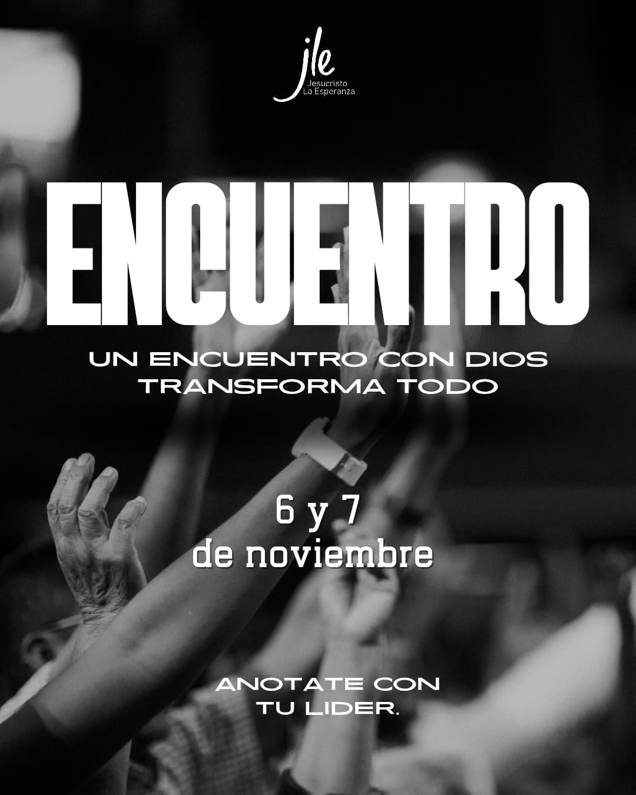
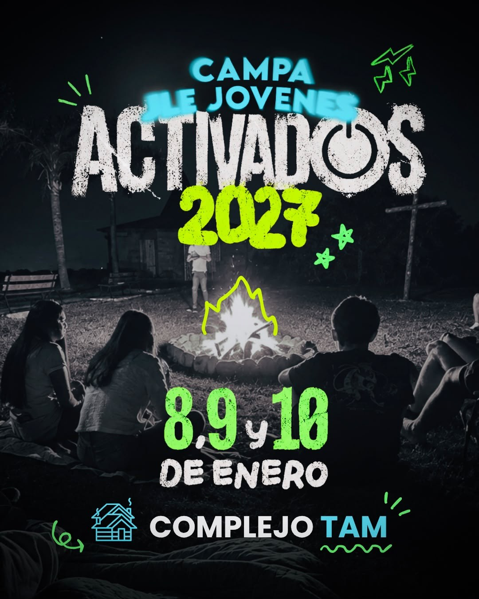

“A algunos que dudan, convencedlos.”
Iglesia Jesucristo La Esperanza
Hay esperanza.
Y tiene nombre:
Jesucristo.
No importa lo que estés viviendo hoy, hay un lugar para vos. Vení como sos, encontrá una familia y descubrí la paz que solo Él puede dar.
Brown 675, San Nicolás de los Arroyos
Un momento con la Palabra
Un versículo
para hoy.
Una palabra para acompañar tu día.
Más que una iglesia, una familia que camina con vos.
Encontrá dónde conectarAgenda de la iglesia
Celebramos y
crecemos juntos.
Anuncios, encuentros y momentos para compartir como familia. El aniversario de la iglesia es nuestro próximo gran festejo.
Jesucristo
La Esperanza Aniversario 30 de octubre · 1 de noviembre
La Esperanza Aniversario 30 de octubre · 1 de noviembre
Nuestro próximo gran encuentro
Aniversario de la iglesia
Tres días para celebrar lo que Dios hizo y sigue haciendo en nuestra casa.
Sábado 31 de octubre y domingo 1 de noviembre · 20:00
Brown 675 · San Nicolás de los Arroyos
00días
00horas
00minutos
00segundos
Cuenta regresiva para el comienzo del aniversario.
Consultar por el aniversarioAnuncios
Octubre y noviembre
Tocá cada afiche para verlo completo.

Lunes 12 de octubre · 16:00
Salida evangelística
Punto de encuentro: Savio y Mitre, esquina Mostaza.

Miércoles 14 de octubre · 20:00
Bautismo
Brown 675 · San Nicolás de los Arroyos.

Sábado 17 de octubre · 09:00
Persevera y triunfarás
Congreso de mujeres · JLE Pueblo Esther, Rioja 1326. Entrada libre y gratuita.

Viernes 23 de octubre · 18:30
Charla para mujeres
Brown 675 · San Nicolás de los Arroyos.

6 y 7 de noviembre
Encuentro
“Un encuentro con Dios transforma todo”. Anotate con tu líder.

Evento destacado · Jóvenes
Campamento
Activados 2027.
8, 9 y 10 de enero de 2027 · Complejo TAM.
Ver afiche completoQuiénes somos
Más que un edificio,
una familia.
En Jesucristo La Esperanza creemos que cada persona importa para Dios y para nosotros.
Somos una comunidad de fe que existe para compartir el amor de Jesucristo, acompañarte en cada etapa de tu vida y ayudarte a crecer junto a otros que también están buscando a Dios.
Lo que comenzó como un grupo de creyentes con un mismo propósito sigue creciendo como un hogar espiritual para personas y familias de toda edad.
Vení a conocernosNuestra visión
Ser una iglesia que refleje el corazón de Cristo: un lugar donde toda persona encuentre esperanza, propósito y una familia espiritual.
Nuestra misión
Compartir el Evangelio, formar discípulos comprometidos con la Palabra y servir a nuestra comunidad con amor práctico.
Liderazgo pastoral
Martín y Natalia Castells sirven a la iglesia con cercanía, compromiso y cuidado genuino por cada persona.
Familia pastoral
Una iglesia que
acompaña.
Martín y Natalia Castells acompañan a nuestra congregación con cercanía, compromiso y cuidado por cada persona.
Contactar a la iglesiaLo que creemos
Nuestra fe se basa
en la Palabra de Dios.
Estas convicciones sostienen todo lo que somos y hacemos.
La Biblia
Es la Palabra inspirada de Dios y la autoridad final para la fe y la conducta del creyente.
2 Timoteo 3:16–17Un solo Dios en tres personas
Un solo Dios eterno: Padre, Hijo y Espíritu Santo, iguales en naturaleza y unidos en propósito.
Mateo 28:19 · 2 Corintios 13:14La condición humana
Todos necesitamos reconciliarnos con Dios; por nuestras propias fuerzas no podemos hacerlo.
Romanos 3:23Jesucristo y la gracia
Jesús murió en la cruz y resucitó. La salvación se recibe por gracia, a través de la fe.
Efesios 2:8–9 · Juan 14:6El bautismo
Es un acto de obediencia y testimonio público de la fe en Cristo.
Mateo 28:19 · Romanos 6:4La Iglesia
Es una familia llamada a congregarse, amarse, servir y crecer en fe y madurez espiritual.
Hebreos 10:24–25Ministerios
Hay un lugar
para vos.
Cada etapa de la vida tiene un espacio en nuestra familia. Encontrá dónde conectar, crecer y servir.
Niños
Un espacio seguro y lleno de amor donde los más pequeños descubren a Jesús con historias, juegos y enseñanza bíblica adaptada a su edad.
Jóvenes
Jóvenes reales, con preguntas reales, construyendo una fe que resiste. Comunidad, música y enseñanza relevante. Instagram de jóvenes ↗
Familias
Acompañamos a parejas y familias con enseñanza bíblica práctica, consejería y comunidad.
Alabanza
Un equipo apasionado que prepara cada momento de adoración como una ofrenda genuina.
Evangelismo
Compartimos el amor de Jesús en nuestra ciudad y servimos a las personas con esperanza, oración y acciones concretas.
Cultos y transmisiones
Conectate con
nuestra comunidad.
Nos reunimos los domingos. Consultá nuestros canales para confirmar si hay una transmisión en vivo; también podés ver mensajes anteriores.
Contacto y visitas
Nos encantaría
conocerte.
No necesitás una razón especial para escribirnos. Te responderemos con gusto.
Visítanos
Brown 675San Nicolás de los Arroyos, Argentina Abrir en Google Maps
Escribinos
iglesiajle33@gmail.comPor ahora, el contacto directo es por correo. No publicamos un número de teléfono hasta tener uno confirmado.